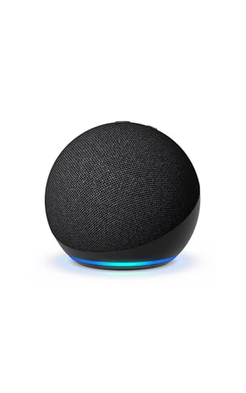

← Back to Electronics
Electronics · #4 pick
Amazon Echo Dot (5th Gen)
Compact smart speaker with improved audio and a temperature sensor.
View on Amazon →Opens the real Amazon product page in a new tab.
Why it made the list
A larger front-firing speaker delivers clearer vocals and deeper bass than the previous Dot. Built-in temperature sensor and accelerometer unlock new Routines — tap the top to dismiss an alarm.